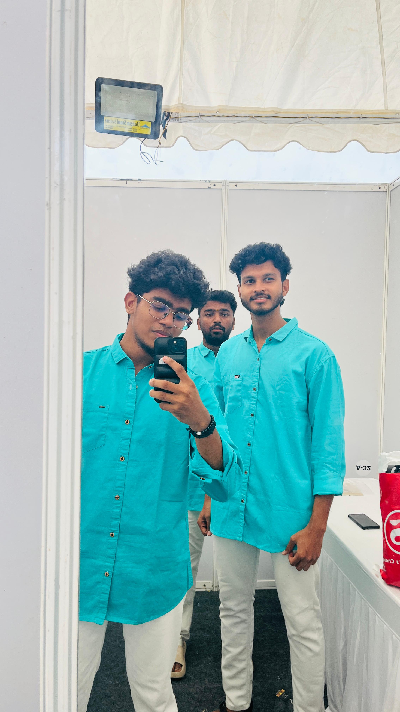
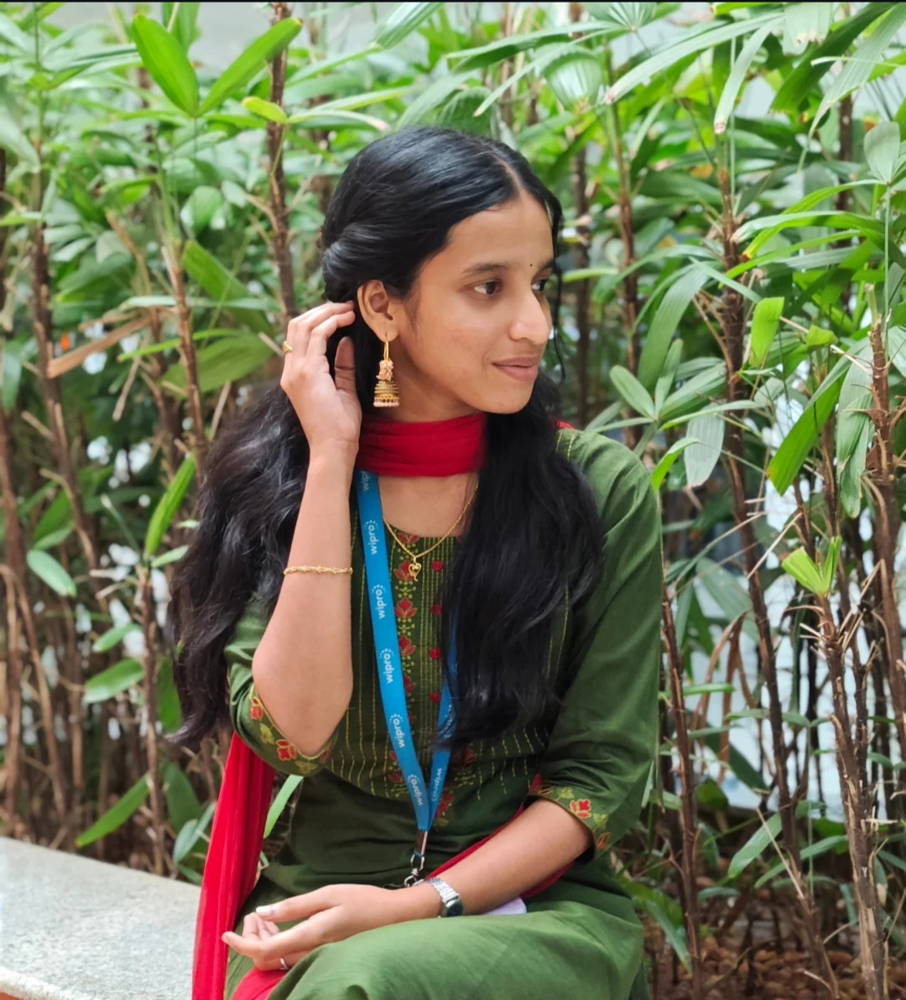
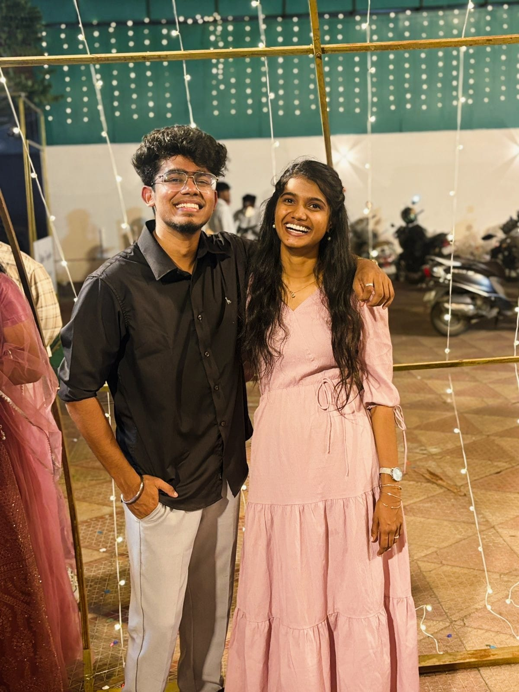
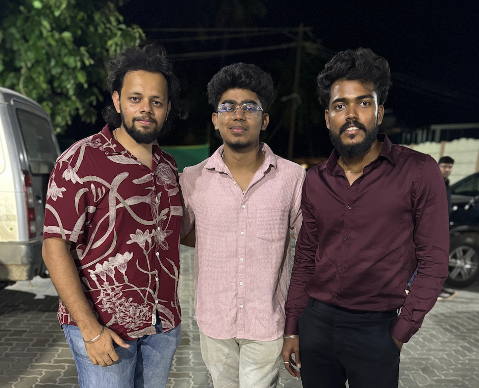
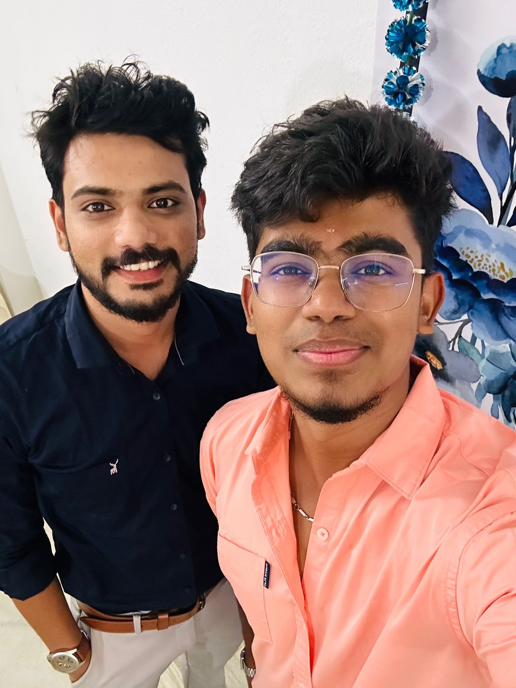
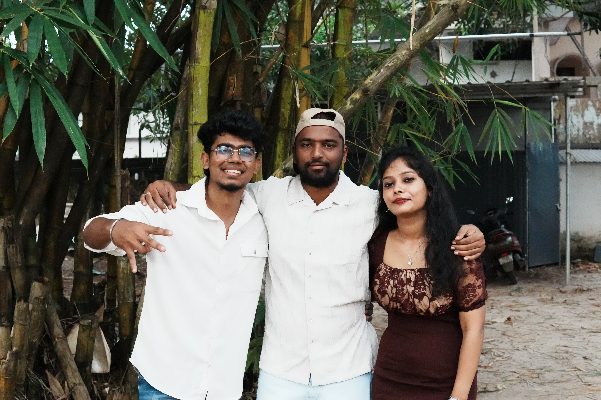

Scrapbook of Memories
A small collection of smiles, beautiful memories, and birthday wishes created with love.
Raji
A dance you performed with you that holds a special place in my heart : 💖 Kandipa apdi podu dhan Adhu dhan sir Enakunu solikuduthadhu❤️ Micham elam avanga special akkaku dha solikuduthirukaru neraiya😜 Just joking thambu solithara elamey fav dhan❤️
My all-time favorite choreography of you: 🤩 Neraiya dance irukey! Special ah solanum na "inum konja neram" adhulaiyu special ah solanum na "என் கண்ணு போல இருக்கனும் என் புள்ளைக்கு தகப்பன் ஆகணும்" line choreography plus ninga rendu peru andha expression has my whole heart❤️
One liner about you: 😊 My sweet little fav thambu! ❤️ Enaku thambi ilanu feel paniruken ivanga elaraiyu pakuradhuku munadi Cibi thambu is special one in that list ❤️
A cherished memory in dance: 💭 Its been 10 years na dance pani Enaku epavu oru inferiority complex enala mudiyadhunu Unmaiya solanuna thambu ninga elaru kudutha motivation la dance ye panen Apa felt enakunu oru circle varanju adhukulaiye irundha enna yaro free panivitamadhiri Ovvoru tymum thambu solikudukumpodhu avalo motivate pannuvaru mathavangaluku adhu epdi nu theriyala but that's means a lot to me 🤗 We love him and you a lot da❤️🫂


Gokul
A Dance that holds a special place in my heart 💖
Kun Faya Kun song thaan enaku romba special 🤩 because athula CB bro fast aana movements la potaaru 🔥,
enaku antha maathiri fast movements la aadanum nu romba aasai 😍
nan ethir paakave illa CB bro antha maathiri steps enaku kodupaaru nu 💃
My all time favourite choreography of yours 💫
Innum konjam neram song thaan enaku romba favourite 🎶
athula podra ellam steps um detailing la spr aa irukum 🔥
alaga oru movie paakura maathiri thaan irunthuchu 🎥
One sentence la solla mudiyathu 🤔
Ego suthama kedaiyathu yaaru kitta pesum pothum palagum pothum nan gavanicha vishayam 💕
avaru jollya ellar kittaiyum pesuraru 🤣
nan choreographer apdi nu gethu kaatrathu la onnumey illa 🙌
Avaroda dance thaam thakka theem thakka song la paathen 💃
avaru podra steps romba smooth aa irunthuchu 💫
nan appove avaru kitta poi pesanum nenaichen 🤗
aana konja naal kalichu avaravey enkitta vanthu pesunaaru 💬
romba familiar aana oru person kitta pesura maathiri thaan enaku feel aachu 😊
first time pesura maathiri la illa 🤗
A cherished memory 💭
Mr. Cool 😎 nan avara paathu romba inspire aana vishayam 💡
avaru romba cool aa irukaaru 😎
nan neraiya per aa cool aa irunthu paathuruken 🤣
but kandipa avanga romba interest eduthu porupa oru vishayam pannum pothu
kandipa antha edathula porumaiya elanthuruvaanga 🤝
ethaachum thappa pochu na 🙅♂️
But bro romba cool aa irunthaaru.
SOW 2025 la thaan nan nalla observe pannen.
Kandipa nan romba enjoy pannen 🥳
nan kasta pattu la practice pannave illa jollya irunthen avaru kooda dance pannum pothu
and enaku iruntha stage fear um suthama poidichu 🤗
ennaiyum stage eri aada vachaaru 😘
Santhiya
A dance that holds a special place in my heart 💖
It was my first time dancing with you for Pongal celebration 2024.
I was hesitant as it was the first time dancing in a different team 🤔.
But I can tell now it was one of my most favourite performances 🎉.
Each day of practice was utmost fun and enjoyable 😄.
It was a wholesome experience, and it was so close to my heart ❤️.
Thanks to you for giving so much confidence and motivating the best 🙏
My all-time favorite choreography 🤩
For me, it was Anal Melae Pani Thuli 🎶.
I was in awestruck on that performance.
Each step you did so well 😲
One liner about you 😎
Mr. Cool 😎
In all chaos, he can handle it so well.
A cherished memory 💫
It was the first time I performed in duo with my friend 👫.
He is the first one who motivated, appreciated, and gave feedback 💬.


Kavya
Hello My dear Sibi Eata...! 💖
One of my favorite person in office. 🏢✨
I really don't know to specifically highlight the dance performance with you as a choreography. 💃🎭
Honestly, all the performances with our team were so special for me. 🤗💫
A dance that holds a special place in my heart 💞
"Onakka Muffini..." dance holds a special place in my heart as far as I remember. 💞🎶
Thanks for the memorable home-like feeling rather than just as a choreographer. 🏡❤️
Grateful and happy to be with you as a lil sister... Always! 👧🤍
One liner about you 🌟
You always cherish me and gave me inspiring words whenever I made a mistake in my dance. 🌟🙏
You let me feel free and comfortable rather than scolding me... 😌💕
I truly admire that comfort with you, brother. 🤝💙
I don’t want to make this an essay! 📝😆
To be brief…
I’m really joyful to be with you and our team for dance, 💃🕺
and I’m eagerly looking forward to a big performance together. 🎉🔥
"Happy Happy Birthday to one of the most charming, supportive, and lovable persons — my Sibi Eata...!" 🎂🎊🎁
Sandeep
A dance that holds a special place in my heart 💖
The performance we did together in April 2023 with Inbha and Sadham Anna as well will always remain close to my heart — “The Boys” for the very first time 🎉.
From rehearsals filled with laughter 😂 to that magical moment on stage when everything fell into place ✨,
dancing beside you felt effortless and powerful 💪.
That performance wasn’t just about the steps 💃;
it was about our shared passion 🔥, fun 🎉, sync 💕, and trust 🤝.
My all-time favorite choreography of Sibi 💫
Contemporary of "Annul Maelae" 🎶 in which I felt speechless 😲 and enjoyed a lot that entire performance 🌟.
The way he brought emotion 💕, precision 🎯, and originality 🔥 into every move left me awestruck 😍.
He has a way of telling stories through dance that makes everyone stop and watch in awe 🤯.
One liner about you 🙌
He is the kind of dancer who doesn’t just move to the music... he becomes the music! 🎵
A cherished memory 💭
I still remember when our team was struggling with the SOW 2024 sequence and felt like giving up 😩.
There was a time I felt completely lost in my own doubts 🤔 and I wanted to walk away.
But he motivated me and made me trust in myself 💪,
and made me execute it well at that time 💯.
I’ll forever hold this friendship as one of the purest and most meaningful gifts I’ve ever received 💕.


Sadham
A dance that holds a special place in my heart 💖
Maraimthirunthu Paarkum — Old to New Sequence dance with CB, Sandeep, and Inbha 💃
My all-time favorite choreography of him 🤩
His solo "Venpani Malare" 🎶
One liner about you ❤️
He is my grown-up son ♥️
When you show him 50% love, you get it back in 500% 💕
A cherished memory 💫
His dance moves are itself a motivation 💪,
and he doesn’t need to give advice orally 💬.
Once a person sees his dance, they get motivated by it,
which is all enough 💯.
Bhuvi
Today is a special day for you because it is your birthday 😅
Happiest born day da mapla ❤️
Live long and stay blessed with my BF 😅
Having you as a friend is one of the greatest blessings in my life.
You have been a wonderful and special friend to me 😍.
Our bond continues with the last breath 🫂.
Once again,
Happy Birthday da dancer uhhhhh!!!! 🥳


Swetha
HAPPIEST BIRTHDAY MR. MOTIVATION 🎉🎂
A dance that holds a special place in my heart 💖
Dancing to Venmegam and Enga Pora Raasa with your choreo felt like pouring our hearts into every step 💃.
It was an emotion I'll always hold 😍.
My all-time favorite choreography of yours 🤩
Un Vizhigalil from Maan Karate and Vasantha Mullai complete fun-based songs,
which were totally accomplished by CB's choreo 🥳.
One liner about you 💫
A soul who dances with grace and gives with humility,
never letting ego steal the rhythm of his heart 💫.
A cherished memory 💭
I won't forget my 1st day dance practice where I was totally frightened 😬.
You comforted me very well like we were familiar 🤗.
From that day till today, he has taught me without any hesitation 🙏.
He won't differentiate anyone by dance,
that is the most common point which I have received from our dance team 💕.
SOW 2024 where I gave all my 100%, mainly because of CB,
and the rest completely goes to the team 💯.
“Dance without any fear” — that word reaaallllyyy helped me from the 1st till today 💪.
Jyo
Happy happy Birthday my dear Anna ❤️
You will always be my sweet, cute and forever best brother 💯🥳
Thanks for guiding me in a good way always 🫶🏻
May all your dreams and wishes come true Anna 🥰
A dance that holds a special place in my heart 😍
SOW-2024 ❤️
I will never forget those beautiful 30 days, I guess 🥹
Happy happy days of my life with our team 😍
Only once I have performed with you Anna... More to go 😁
All-time favourite choreography ♥️
Innu Konjam Neram 😩♥️
Has my whole heart 💯
Not only this, I love each and every choreography of yours,
yet this is my special one 🫶🏻
One liner about you 🫡
Perfectionist 🫡💯
A cherished memory 🫂
From September 2024 till now, I cherish every moment 🫂
Help in the sense — he gave me strength and support to dance very easily in front of all.
Motivation — 😂 Name itself proves that he is such a perfect motivation guy who always motivates 🤣
Jokes apart...
A leader has this power called Motivation 💯
CB na, you are doing that in a lovable way ❤️
You gave me many advices which I still follow 🫶🏻
Overall, you are a 💎 GEM.
With Nariya paasam
Jyo 👸🏻💃🏻


Farhana
In one sentence about Sibi 🙌
He is a pure hearted person ❤️
and he gives more respect and value to the relations 💕
When I started dancing in Wipro for the first time,
I was really scared 😨
but you gave me motivation 💪 that I can do it 💯.
You taught me every step with so much patience 🙏
that I will never forget 🙏.
Still, I remember my first performance with you Sibi 💃.
Not only in the first performance,
up to my last performance, you had the same patience 😊
and I really like that in you Sibi 💕.
Finally, you are one of the very good persons 🙏
I have seen in my life Sibi 💖.
I learnt dance from you,
as well as I learnt how to respect others 🤝.
And the way you treat us like family 👪,
I really like that Sibi 😊.
Surekha
I wish your life always be a beautiful blend of Passion and Profession 💖.
HAPPIEST BDAY WISHES SIBIiiiiii... 🎉🎂
A dance that holds a special place 💖
Thank you for Anal Meley choreography 🙏.
Antha mathiri choreo marupadi aadvana theriala 🔥,
and I can also dance these styles nu enake feel panna vacha oru special performance 💃.
All-time favourite choreography 🤩
Oh Baby performance is my favourite of yours.
Neenga atha deliver panina vitham and neenga aadi na patha,
en mind la nikara 1st performance 🔥.
So that is my favourite 💯.
One liner about him 😊
A decent guy who has no ego to talk with people 🤝.
Always tries to make people feel ease around him 🌈.
A cherished memory 💭
When I doubted myself, he believed in me
and made me believe that I can also dance a style like Anal Meley 💪.
One time he said, “Adda porom, nama best nama kuduthutu vantharalam.
Mudinja apom inum konjam practice panirukalamnu yosika venam.” 🤔
I always try to follow this advice 💯.
Correct ah practice panina elarume ela style uh aadalamnu 💃.
You split your choreography to all your team members
and make everyone feel like a main dancer,
giving the spotlight to all 🌟.
You're always a best choreographer than a dancer for me.
Happy birthday Sibi bro 🎂
Wishing you a year filled with happiness 😊,
good health 🥗 and peace of mind 🙏.


Jayanthi
A dance that holds a special place in my heart 💖
That was my second dance in the CMDC dance club and he is my choreographer 🙌
Ref: Varayo Varayo song 🎶
He taught me literally western and lyrical dance 💃
That was my first time doing that style and also being new to the team,
still he made me comfortable 😊 and encouraged me a lot 💕
and I hope I did well.
My all-time favorite choreography 🤩
I like all the choreographies he has done except Poraney Poraney song 😂
because it's my favvvvvvvvvv 🤣
One liner about you 🙌
King of Kalaikurathu 🥲
A cherished memory 💭
Diwali dance done in white tees and black shirt 👗
Rmboo Rmboo special because avloo fun and enjoy panni aaduna dance 😄
Very supportive in fact 🤝
He only figured out endha style nan nalla pandren 🤔
and I am expecting him to do more choreography in that 💕.
Saranya
A dance that holds a special place 💖
My first performance at Wipro — Sol Pechu song 💃
Favorite choreography 💥
All SOW choreographies 💥
One liner about you 😍
So friendly, always cares about us,
no ego and very simple 😍
Memories to cherish 🤗
Ennayum vechi choreo panni,
porumaiya thittama motivate panni aada vecharu.
Motivation avaru choreo dance pannum bodhu mattum illa,
always irukkum 🤗


Ramesh
Nalla etharthamana character,
epome jollya sirika vechuthu irupanga,
athu enaku pudikum 🤗🥰
Dance semmaya aaduvaru,
athu romba pudikum ✨😍
Anna oda Santhipome Kanakalil song performance enaku romba pidikum 😍
Wish you many more happy returns of the day annae ✨🤩❤
Stay blessed and live long ✨🥰😇🤗
Wish you all the success in your life ✨🤩
Ajeeth
Happy Birthday to my amazing brother 😘!
Thank you for always being my constant support,
my secret keeper, and my biggest cheerleader 🔥
May this year bring you happiness, strength,
and everything you’ve been wishing for 🎉✨
Keep shining and never stop being the awesome person you are 😎🥳
My Favourite choreography 😍💯
Ennavale Adi Ennavale 😍💯


Rampriya
My all-time favorite choreography of his 💥💃
Dailamo Dailamoo 💥💃
One liner about him 🤗😍
Such a sweet and caring soul 🤗😍
Wishing him all the happiness and success in his life.
Happy Birthday to my brother Sibi....
Stay blessed and happy with your loved ones 🥰🤩❤️
Chitra
Hey Chottu bhai,
You are a Rockstar ✨
Keep rocking as always.
You will definitely succeed in both your profession and passion 👍
Akka will always support you wherever you go 🤗
Happy birthday Chottu ❣️
Another adventure-filled year awaits you.
Welcome it by celebrating your birthday with pomp and splendor 🎊🎊


Aditiya
Favourite choreography 😍
Venmathi during Onam 2023 😍
One liner about him ♥️🥰
Charming, humble soul who starts off quiet but soon bonds like family.
Dance moves like a pro with no ego 😎,
and always wears a heartwarming smile ♥️🥰
Dinesh
Happy birthday SIBI bro 🎂
I wish you to grow higher and higher.
One liner about you 🤗
Good and a cool guy,
always wears a smile on his face 🤗
Favourite choreography 😍
Ennavale Adi Ennavale 😍


Praveen
Best wishes on your birthday Sibi ♥️✨
Hope this year will give you the best of happiness
and cheerfulness to your life ❣️💫
Wish you to do the right things
for the right people whom you love ❣️
and care for the foremost 🤗.
Happy birthday once again,
and best of luck for your future 🥳🎉.
Satya
Sibi na,
your dance and expression while dancing
enaku romba pudikum ❤️
Happiee Birthday na 😻
You always have a cute smile on your face.
Wishing you the happiness forever 🤗


Navya
Happy birthday dancer 🤭💃🏻
whose movements are a symphony of grace and beauty 💫.
Your passion for dance is evident in every performance 💃,
and it always leaves us feeling inspired 💖.
May your birthday be filled with music 🎵,
rhythm 💃,
and endless opportunities to share your love of dance
with the world 🌎💫.

Mohan
One liner about him ❤️
One of those few good friends I've got in Wipro Coimbatore office ❤️
Favourite choreography 💥
Malama Pitha 💥
You did it at Barbeque Nation.
Kowsi
All-time favourite choreography 💃💥
Ponmagal Vandhal 💃💥
#Always my Anna 😊🤩
#Hbd Anna 🎂


Siddharth
Happy birthday to the amazing dancer of CMDC 💥💥💥
Gp
Favourite choreography
Vasantha Mullai
Memories
June Ponaal
Especially that Vaanam Vanthu step — life long marakkathu 😂


Reeba
Happy birthday bro 🎂♥️
Be happy always and dance more 🤗
#Kind
#Friendly brother